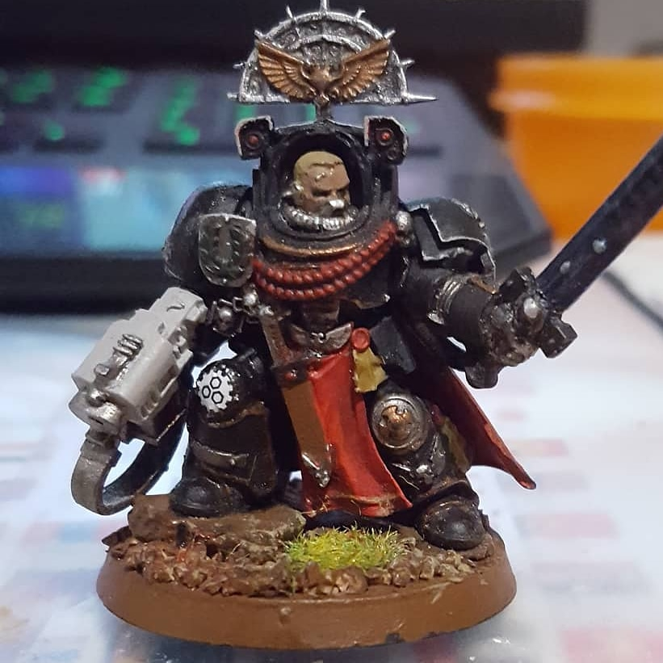

Hallo Wereld, ik ben Julien Kenneth Pleijte.
Hier is wat informatie over mijzelf:
- Hobby's
- Warhammer 40.000
- Gaming
- Dungeons and Dragons
- Favoriete Eten
- Pannenkoeken
- Hamburgers
- Pizza
- Favoriete Games
- Terraria
- De Dawn of War series
- De Starcraft series
- Hearthstone
- The Elder Scrolls: Skyrim
- Titan Quest
- Factorio
Ik ben 20 jaar oud en ik woon in Breskens. Ik ben geboren in de Duitse plaats Mönchengladbach. Mijn moeder is Duits en werkt als verpleegkundige bij een ziekenhuis. Mijn vader is Nederlands en is nu een vestigingsleider van Leys. Ik heb een jongere zus die een opleiding mediavormgeving aan Scalda in Vlissingen volgt.


Dit is een van mijn modellen die ik in elkaar heb gezet en geschilderd.
Dit is de Emperor of Mankind. Hij is de leider van de Imperium of Man.